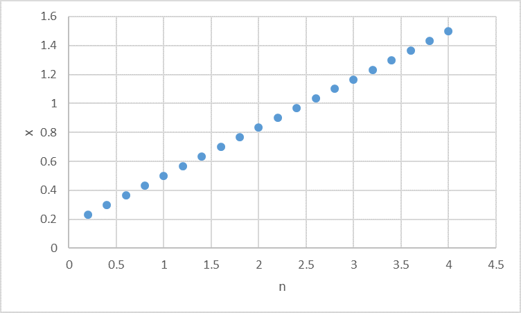
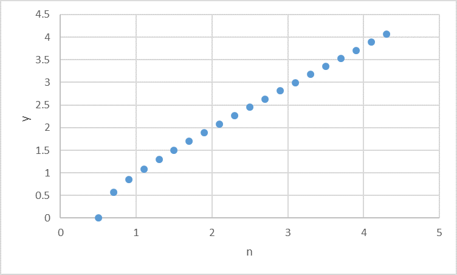

回折光は直線か？-02
ｘ，ｙとｎの関係
ｘとｎとの関係は，
\(\Large x = \frac{ (2n+1) \lambda^2}{2 \ d} \)
から，

となり，直線状となります．
ｙに関しては，
\(\Large y = \sqrt{- \frac{ (d^2 - \lambda^2) (d^2 - \lambda^2 ( 2 n +1)^2)}{4 d^2}} \)
から，

のようになり，ｎが小さい場合には直線から外れますが，ｎが大きくなると直線となることがわかります．
\(\Large \begin{eqnarray} y &=& \sqrt{- \frac{ (d^2 - \lambda^2) (d^2 - \lambda^2 ( 2 n +1)^2)}{4 d^2}} \\
&\simeq& \sqrt{ \frac{ (d^2 - \lambda^2) 4 n^2 \lambda^2}{4 d^2}} \\
\end{eqnarray} \)
となるので，ｎが大きくなると原点を通る直線となります．
では，傾きはどうなるでしょう？
\(\Large \alpha = \frac{y}{x} \)
とすれば，
\(\Large \begin{eqnarray} \alpha^2 &=& \frac{y^2}{x^2} \\
&=& \frac{ (d^2 - \lambda^2) 4 n^2 \lambda^2}{4 d^2} \frac{d^2}{n^2 \lambda^2} \\
&=& \frac{d^2 - \lambda^2}{\lambda^2} \\
\end{eqnarray} \)
\(\Large \alpha = \frac{\sqrt{d^2 - \lambda^2}}{\lambda} \)
となります．つまり，下の図のようになります．
ここで，赤直線は，
\(\Large \sqrt{ (\sqrt{d^2 - \lambda^2})^2 - {\lambda}^2} = d \)
となるので，
\(\Large sin \theta = \frac{\lambda}{d} \)
\(\Large \lambda = d sin \theta \)
となり，回折で求めた結果と一致します．
あまり意味のない計算だったかもしれませんが，すっきりしました．